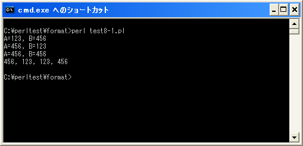

値をインデックス指定で使用
特に指定しない場合は、リストとして並べられた値は順番に変換されていきます。
ここでは値が並べられた順ではなく、値のインデックスを指定することで、任意の位置の値を使用する方法を確認します。少し分かりにくいですが次の例を見て下さい。
printf("A=%d, B=%d¥n", 123, 456);
上記の場合は「A=123, B=456」と表示されます。リストとして値が2つ指定されていますが、並べられた順に値が変換されていくためです。では次のように変更してみます。
printf("A=%2¥$d, B=%1¥$d¥n", 123, 456);
今度の場合は「A=456, B=123」と表示されます。これは変換される値を並べられた順ではなくどの値を使用するかをインデックスを使って指定しています。
インデックスは値が並べられた順に1,2,3,...となっています。0からではないので注意して下さい。そしてフォーマット指定子の中で次のように指定します。
インデックス$
記述する位置はフォーマット指定子の中の「%」の直後です。例えば2番目の値を使用する場合は「2$」となります。
注意する点として、書式指定文字列を指定する時にシングルクオーテーションを使用している場合はこのまま記述できますが、ダブルクオーテーションを使用している場合は「$」に対してエスケープシーケンスする必要があります。よってこの場合は「2¥$」のように記述します。
printf("A=%2¥$d, B=%1¥$d¥n", 123, 456);
printf('A=%2$d, B=%1$d', 123, 456);
同じ書式指定文字列の中で同じ値を繰り返し指定しても構いませんし、インデックスを指定せずにフォーマット指定子を記述する方法と併用しても構いません。
printf("A=%2¥$d, B=%2¥$d¥n", 123, 456);
printf("%2¥$d, %d, %1¥$d, %d¥n", 123, 456);
上記を実行すると次のように表示されます。
A=456, B=456 456, 123, 123, 456
インデックスを指定しないフォーマット指定子については、通常通りリストに指定された値が先頭から順に使用されます。
サンプルプログラム
では簡単なプログラムで確認して見ます。
use strict;
use warnings;
use utf8;
binmode STDIN, ':encoding(cp932)';
binmode STDOUT, ':encoding(cp932)';
binmode STDERR, ':encoding(cp932)';
printf("A=%d, B=%d¥n", 123, 456);
printf("A=%2¥$d, B=%1¥$d¥n", 123, 456);
printf("A=%2¥$d, B=%2¥$d¥n", 123, 456);
printf("%2¥$d, %d, %1¥$d, %d¥n", 123, 456);
上記を「test8-1.pl」の名前で保存します(文字コードはUTF-8です)。そしてコマンドプロンプトを起動し、プログラムを保存したディレクトリに移動してから次のように実行して下さい。

( Written by Tatsuo Ikura )

著者 / TATSUO IKURA
初心者～中級者の方を対象としたプログラミング方法や開発環境の構築の解説を行うサイトの運営を行っています。